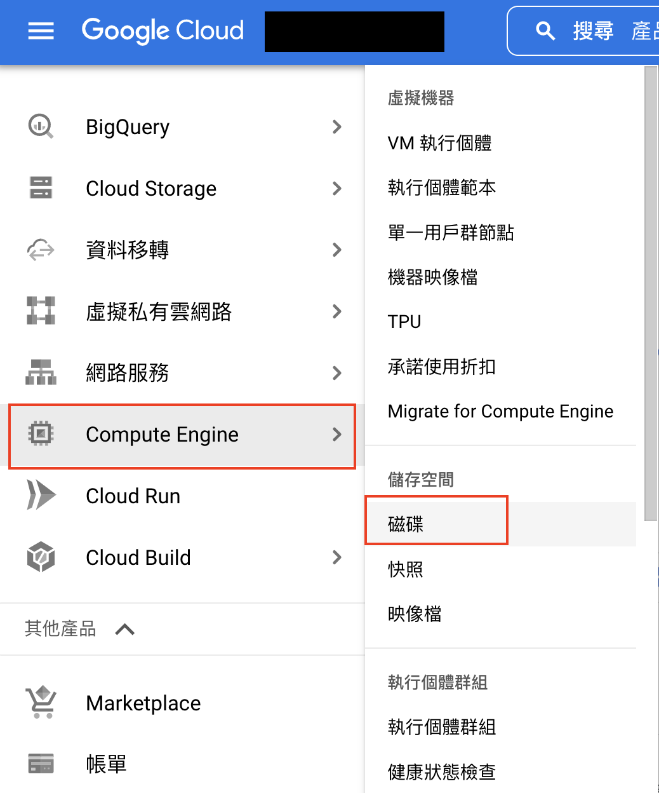

前言
[問題]google cloud 上的硬碟滿了。
原本開一台機器，預設的硬碟大小好像是 10GB，
滿了的時候，google cloud 的 ssh 視窗會連不進去，資料庫介面也會顯示 desk full 的相關資訊
[解決]加大硬碟。
正文
- 進入 磁碟

- 會看到很多已開的機器， 選你要加大的機器，點選編輯
加到多大看你的需求
- 更新過後 ssh 還是無法進去，必須重啟機器，重開時他就會幫你重整磁碟大小到你設定的大小。
重啟後也就可再度使用 ssh 連進去了。
補充：
ssh 進不去的期間也可以試著用 cloud shell
的 gcloud 指令連進去
1 | gcloud compute ssh --zone "asia-east1-b" "機器vm名稱" --project "專案名稱(google cloud 最上方的名稱)" |
心得
還有另一種是外加硬碟的方式，而不是直接加大機器本身的硬碟大小，有機會可以再研究。